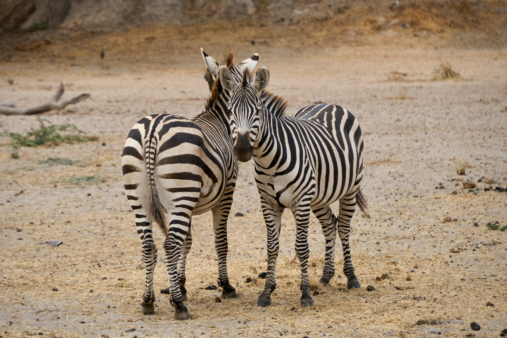

4 Days / 3 Nights — Trekking Adventure
Tour Details
- Duration: 4 Days / 3 Nights
- Accommodation: Comfortable campsites and selected lodges
- Included: Trekking support (donkeys + handlers), all meals, transfers, guided cultural visits
- Excluded: International flights, travel insurance, optional activities and personal purchases
Why this trek?
This route combines ancient volcanic craters, misted highland forests and the dramatic alkaline shores of Lake Natron. Walk through landscapes shaped by fire and water, meet hospitable Maasai communities, and sleep beneath clear African skies. With experienced guides and local support, this trek balances cultural immersion with thoughtful comfort.
Drive to Empakai — Trek down to the Crater Floor
After morning pickup from Arusha, enjoy a scenic drive through the Ngorongoro Highlands toward the Empakai area. Stop for a picnic lunch at a panoramic lookout, then meet your trekking guide and support team. Together you will descend the rim and enter the lush Empakai Crater — a hidden, verdant bowl with a deep freshwater lake at its center. Settle at our specially prepared campsite on the crater floor. In the evening, share stories around the fire and enjoy a wholesome dinner under the stars.
- Trekking: Moderate descent — approx 3–4 hours including stops
- Accommodation: Campsite on Empakai Crater floor (tented/under-stars)
Empakai to Elerai — Donkeys, Hills & Maasai Hospitality
Wake to the quiet of the crater and a cooked breakfast. Your team of donkeys and experienced handlers will load equipment as you set off across rolling hills and shrouded woodlands toward the village of Elerai. The trek is punctuated with sweeping views, occasional wildflowers and encounters with pastoral Maasai herders. Tonight we stay at Acacia Private Camp — a comfortable bush camp where you will be welcomed to share local traditions and enjoy a classic nyama choma (Maasai-style BBQ).
- Trekking: Full day with varied terrain — 5–7 hours with breaks
- Accommodation: Acacia Private Camp (bush camp with mattress tents and shared facilities)
Trek to Ol Doinyo Lengai Base — Transfer to Lake Natron
On day three you cross gentle ridgelines toward the base of Ol Doinyo Lengai, the sacred 'Mountain of God' for the Maasai and one of the world's few active natrocarbonatite volcanoes. The stark volcanic soils and brilliant skies make for dramatic walking. At the base you will meet your safari vehicle which transports the group to a lodge or camp near Lake Natron. We recommend extending your stay to explore the crater, hot springs and flamingo habitats.
- Highlight: Spectacular views of Ol Doinyo Lengai and the Rift escarpment
- Accommodation: Lake Natron area camp or lodge
Morning Hike & Return to Arusha
Enjoy an early morning hike along the lakeshore or a short excursion to nearby springs and Maasai homesteads. After breakfast begin the return transfer to Arusha, with stops en route for photos and refreshments. Arrive in Arusha in the afternoon to conclude the trek — or continue with optional extensions at Lake Natron for birding and cultural immersion.
- Transfer time: Approximately 4–6 hours to Arusha depending on stops
- End point: Arusha town / airport transfer on request
Optional Extensions & Activities
Extend your journey with additional nights at Lake Natron for flamingo viewing, guided walks to soda springs, or a guided ascent of Ol Doinyo Lengai for sunrise (requires extra day, guide and equipment). We can also arrange cultural visits, birding specialists, and photography guides on request.
Health & Safety Notes
- Physical fitness: Moderate fitness is required; daily walks average 4–7 hours on uneven terrain.
- Altitude: Parts of the trek reach higher elevations — stay hydrated and pace yourself.
- Equipment: We provide tents, mattresses and communal cooking. Please bring personal sleeping bag, walking shoes, sun protection and a refillable water bottle.
- Insurance: Comprehensive travel and medical evacuation insurance recommended.
Included & Excluded (Quick Summary)
- Included: Trek support (donkeys + handlers), all meals on trek, campsite setup, transfers to/from Arusha, guiding fees, park permits
- Excluded: International flights, travel insurance, personal gear hire, optional activities and gratuities